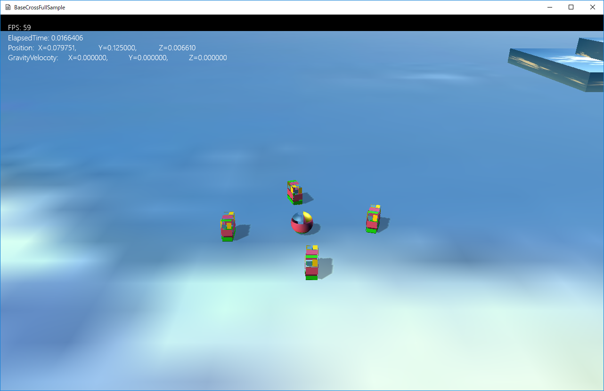
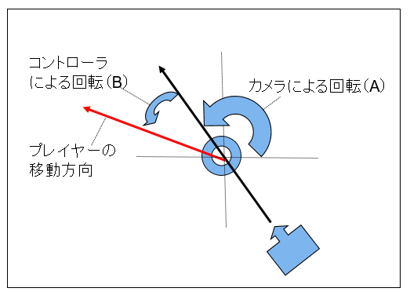

図1201a
チュートリアル001（FullSample101）と似ている感じですが、ちょっと違います。
//プレイヤーの作成
void GameStage::CreatePlayer() {
//プレーヤーの作成
auto PlayerPtr = AddGameObject<Player>();
//シェア配列にプレイヤーを追加
SetSharedGameObject(L"Player", PlayerPtr);
PlayerPtr->AddTag(L"Player");
}
Player::Player(const shared_ptr<Stage>& StagePtr) :
GameObject(StagePtr),
m_Velocity(0)
{}
template<typename T, typename... Ts>
shared_ptr<T> AddGameObject(Ts&&... params) {
try {
auto Ptr = ObjectFactory::Create<T>(GetThis<Stage>(), params...);
PushBackGameObject(Ptr);
return Ptr;
}
catch (...) {
throw;
}
}
SeekObject::SeekObject(const shared_ptr<Stage>& StagePtr, const Vec3& StartPos) :
GameObject(StagePtr),
m_StartPos(StartPos),
m_StateChangeSize(5.0f),
m_Force(0),
m_Velocity(0)
{
}
//追いかけるオブジェクトの作成
void GameStage::CreateSeekObject() {
//オブジェクトのグループを作成する
auto Group = CreateSharedObjectGroup(L"SeekGroup");
//配列の初期化
vector<Vec3> Vec = {
{ 0, 0.125f, 10.0f },
{ 10.0f, 0.125f, 0.0f },
{ -10.0f, 0.125f, 0.0f },
{ 0, 0.125f, -10.0f },
};
//オブジェクトの作成
for (auto& v : Vec) {
AddGameObject<SeekObject>(v);
}
}
void Player::OnCreate() {
//初期位置などの設定
auto Ptr = GetComponent<Transform>();
Ptr->SetScale(0.25f, 0.25f, 0.25f); //直径25センチの球体
Ptr->SetRotation(0.0f, 0.0f, 0.0f);
Ptr->SetPosition(0, 0.125f, 0);
//CollisionSphere衝突判定を付ける
auto PtrColl = AddComponent<CollisionSphere>();
//重力をつける
auto PtrGra = AddComponent<Gravity>();
//文字列をつける
auto PtrString = AddComponent<StringSprite>();
PtrString->SetText(L"");
PtrString->SetTextRect(Rect2D<float>(16.0f, 16.0f, 640.0f, 480.0f));
//中略
//カメラを得る
auto PtrCamera = dynamic_pointer_cast<MyCamera>(OnGetDrawCamera());
if (PtrCamera) {
//MyCameraである
//MyCameraに注目するオブジェクト（プレイヤー）の設定
PtrCamera->SetTargetObject(GetThis<GameObject>());
PtrCamera->SetTargetToAt(Vec3(0, 0.25f, 0));
}
}

図1201b
これを実装しているのがVec3 Player::GetMoveVector()const関数です。
Vec3 Player::GetMoveVector() const {
Vec3 Angle(0, 0, 0);
//コントローラの取得
auto CntlVec = App::GetApp()->GetInputDevice().GetControlerVec();
if (CntlVec[0].bConnected) {
if (CntlVec[0].fThumbLX != 0 || CntlVec[0].fThumbLY != 0) {
float MoveLength = 0; //動いた時のスピード
auto PtrTransform = GetComponent<Transform>();
auto PtrCamera = OnGetDrawCamera();
//進行方向の向きを計算
Vec3 Front = PtrTransform->GetPosition() - PtrCamera->GetEye();
Front.y = 0;
Front.normalize();
//進行方向向きからの角度を算出
float FrontAngle = atan2(Front.z, Front.x);
//コントローラの向き計算
float MoveX = CntlVec[0].fThumbLX;
float MoveZ = CntlVec[0].fThumbLY;
Vec2 MoveVec(MoveX, MoveZ);
float MoveSize = MoveVec.length();
//コントローラの向きから角度を計算
float CntlAngle = atan2(-MoveX, MoveZ);
//トータルの角度を算出
float TotalAngle = FrontAngle + CntlAngle;
//角度からベクトルを作成
Angle = Vec3(cos(TotalAngle), 0, sin(TotalAngle));
//正規化する
Angle.normalize();
//移動サイズを設定。
Angle *= MoveSize;
//Y軸は変化させない
Angle.y = 0;
}
}
return Angle;
}
void Player::MovePlayer() {
float ElapsedTime = App::GetApp()->GetElapsedTime();
Vec3 Angle = GetMoveVector();
if (Angle.length() > 0.0f) {
auto Pos = GetComponent<Transform>()->GetPosition();
Pos += Angle * ElapsedTime * m_Speed;
GetComponent<Transform>()->SetPosition(Pos);
//回転の計算
auto UtilPtr = GetBehavior<UtilBehavior>();
UtilPtr->RotToHead(Angle, 1.0f);
}
}
//更新
void Player::OnUpdate() {
//コントローラチェックして入力があればコマンド呼び出し
m_InputHandler.PushHandle(GetThis<Player>());
MovePlayer();
}
template<typename T>
struct InputHandler {
void PushHandle(const shared_ptr<T>& Obj) {
//コントローラの取得
auto CntlVec = App::GetApp()->GetInputDevice().GetControlerVec();
if (CntlVec[0].bConnected) {
//Aボタン
if (CntlVec[0].wPressedButtons & XINPUT_GAMEPAD_A) {
Obj->OnPushA();
}
}
}
};
void Player::OnPushA() {
auto Grav = GetComponent<Gravity>();
Grav->StartJump(Vec3(0,4.0f,0));
}
void Player::OnUpdate2() {
//文字列の表示
DrawStrings();
}
void Player::DrawStrings() {
//文字列表示
auto fps = App::GetApp()->GetStepTimer().GetFramesPerSecond();
wstring FPS(L"FPS: ");
FPS += Util::UintToWStr(fps);
FPS += L"\nElapsedTime: ";
float ElapsedTime = App::GetApp()->GetElapsedTime();
FPS += Util::FloatToWStr(ElapsedTime);
FPS += L"\n";
auto Pos = GetComponent<Transform>()->GetPosition();
wstring PositionStr(L"Position:\t");
PositionStr += L"X=" + Util::FloatToWStr(Pos.x, 6, Util::FloatModify::Fixed) + L",\t";
PositionStr += L"Y=" + Util::FloatToWStr(Pos.y, 6, Util::FloatModify::Fixed) + L",\t";
PositionStr += L"Z=" + Util::FloatToWStr(Pos.z, 6, Util::FloatModify::Fixed) + L"\n";
wstring GravStr(L"GravityVelocoty:\t");
auto GravVelocity = GetComponent<Gravity>()->GetGravityVelocity();
GravStr += L"X=" + Util::FloatToWStr(GravVelocity.x, 6, Util::FloatModify::Fixed) + L",\t";
GravStr += L"Y=" + Util::FloatToWStr(GravVelocity.y, 6, Util::FloatModify::Fixed) + L",\t";
GravStr += L"Z=" + Util::FloatToWStr(GravVelocity.z, 6, Util::FloatModify::Fixed) + L"\n";
wstring str = FPS + PositionStr + GravStr;
//文字列コンポーネントの取得
auto PtrString = GetComponent<StringSprite>();
PtrString->SetText(str);
}
SeekObject::SeekObject(const shared_ptr<Stage>& StagePtr, const Vec3& StartPos) :
GameObject(StagePtr),
m_StartPos(StartPos),
m_StateChangeSize(5.0f),
m_Force(0),
m_Velocity(0)
{
}
void GameStage::CreateSeekObject() {
//オブジェクトのグループを作成する
auto Group = CreateSharedObjectGroup(L"SeekGroup");
//配列の初期化
vector<Vec3> Vec = {
{ 0, 0.125f, 10.0f },
{ 10.0f, 0.125f, 0.0f },
{ -10.0f, 0.125f, 0.0f },
{ 0, 0.125f, -10.0f },
};
//オブジェクトの作成
for (auto& v : Vec) {
AddGameObject<SeekObject>(v);
}
}
void SeekObject::OnCreate() {
auto PtrTransform = GetComponent<Transform>();
PtrTransform->SetPosition(m_StartPos);
PtrTransform->SetScale(0.125f, 0.25f, 0.25f);
PtrTransform->SetRotation(0.0f, 0.0f, 0.0f);
//オブジェクトのグループを得る
auto Group = GetStage()->GetSharedObjectGroup(L"SeekGroup");
//グループに自分自身を追加
Group->IntoGroup(GetThis<SeekObject>());
//Obbの衝突判定をつける
auto PtrColl = AddComponent<CollisionObb>();
//重力をつける
auto PtrGra = AddComponent<Gravity>();
//分離行動をつける
auto PtrSep = GetBehavior<SeparationSteering>();
PtrSep->SetGameObjectGroup(Group);
//中略
//ステートマシンの構築
m_StateMachine.reset(new StateMachine<SeekObject>(GetThis<SeekObject>()));
//最初のステートをSeekFarStateに設定
m_StateMachine->ChangeState(SeekFarState::Instance());
}
| ステート名 | 行動 |
|---|---|
| SeekFarState |
スピードを出してプレイヤーを追いかける。 お互いはくっつかないようにする。 移動方向に頭を向ける |
| SeekNearState | プレイヤーに近づく（到着する） お互いはくっつかないようにする 移動方向に頭を向ける |
class SeekFarState : public ObjState<SeekObject>
{
SeekFarState() {}
public:
static shared_ptr<SeekFarState> Instance();
virtual void Enter(const shared_ptr<SeekObject>& Obj)override;
virtual void Execute(const shared_ptr<SeekObject>& Obj)override;
virtual void Exit(const shared_ptr<SeekObject>& Obj)override;
};
shared_ptr<SeekFarState> SeekFarState::Instance() {
static shared_ptr<SeekFarState> instance(new SeekFarState);
return instance;
}
void SeekFarState::Enter(const shared_ptr<SeekObject>& Obj) {
}
void SeekFarState::Execute(const shared_ptr<SeekObject>& Obj) {
auto PtrSeek = Obj->GetBehavior<SeekSteering>();
auto PtrSep = Obj->GetBehavior<SeparationSteering>();
auto Force = Obj->GetForce();
Force = PtrSeek->Execute(Force, Obj->GetVelocity(), Obj->GetTargetPos());
Force += PtrSep->Execute(Force);
Obj->SetForce(Force);
Obj->ApplyForce();
float f = bsm::length(Obj->GetComponent<Transform>()->GetPosition() - Obj->GetTargetPos());
if (f < Obj->GetStateChangeSize()) {
Obj->GetStateMachine()->ChangeState(SeekNearState::Instance());
}
}
void SeekFarState::Exit(const shared_ptr<SeekObject>& Obj) {
}
１、スピードを出してプレイヤーを追いかける。 ２、お互いはくっつかないようにする。 ３、移動方向に頭を向ける
Force = PtrSeek->Execute(Force, Obj->GetVelocity(), Obj->GetTargetPos());
Force += PtrSep->Execute(Force);
Obj->SetForce(Force);
Obj->ApplyForce();
void SeekObject::OnUpdate() {
m_Force = Vec3(0);
//ステートマシンのUpdateを行う
//この中でステートの切り替えが行われる
m_StateMachine->Update();
auto PtrUtil = GetBehavior<UtilBehavior>();
PtrUtil->RotToHead(1.0f);
}
void SeekObject::OnCollisionEnter(shared_ptr<GameObject>& Other) {
if (Other->FindTag(L"Player")) {
auto Grav = GetComponent<Gravity>();
Grav->StartJump(Vec3(0, 4.0f, 0));
}
}